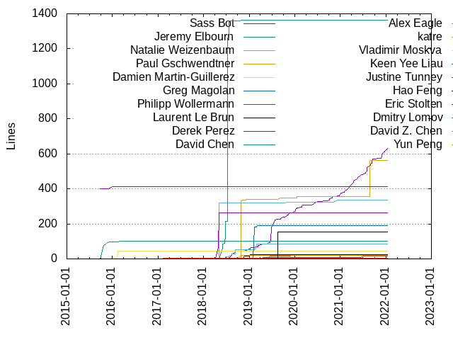
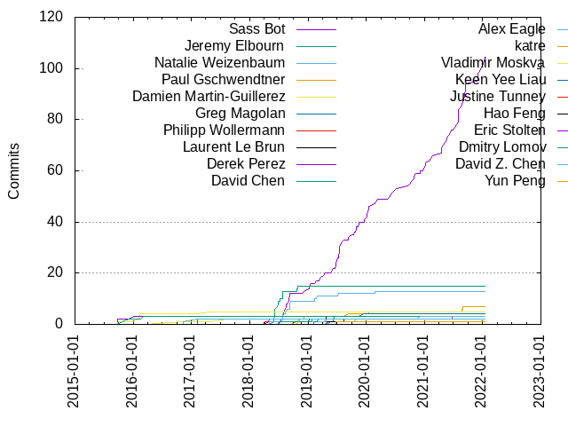

Authors
| Author | Commits (%) | + lines | - lines | First commit | Last commit | Age | Active days | # by commits |
|---|
| Sass Bot | 104 (51.23%) | 633 | 1715 | 2018-07-03 | 2022-01-12 | 1289 days, 1:15:09 | 95 | 1 |
| Jeremy Elbourn | 15 (7.39%) | 1365 | 574 | 2018-05-29 | 2018-10-31 | 154 days, 10:34:42 | 10 | 2 |
| Natalie Weizenbaum | 13 (6.40%) | 86 | 27 | 2018-06-26 | 2020-02-26 | 609 days, 20:28:10 | 10 | 3 |
| Paul Gschwendtner | 7 (3.45%) | 561 | 117 | 2018-10-26 | 2021-08-30 | 1039 days, 0:32:15 | 7 | 4 |
| Damien Martin-Guillerez | 5 (2.46%) | 45 | 44 | 2015-09-25 | 2017-04-25 | 577 days, 18:44:24 | 5 | 5 |
| Greg Magolan | 4 (1.97%) | 20 | 21 | 2019-05-23 | 2019-12-19 | 209 days, 16:29:58 | 4 | 6 |
| Philipp Wollermann | 3 (1.48%) | 15 | 10 | 2018-04-06 | 2021-06-30 | 1181 days, 8:29:37 | 3 | 7 |
| Laurent Le Brun | 3 (1.48%) | 26 | 26 | 2018-11-23 | 2019-04-25 | 153 days, 7:54:20 | 3 | 8 |
| Derek Perez | 3 (1.48%) | 411 | 10 | 2015-09-23 | 2016-01-07 | 106 days, 3:01:02 | 3 | 9 |
| David Chen | 3 (1.48%) | 101 | 36 | 2015-10-23 | 2016-03-02 | 131 days, 10:38:32 | 3 | 10 |
| Alex Eagle | 3 (1.48%) | 335 | 216 | 2018-05-03 | 2020-12-04 | 945 days, 22:29:07 | 3 | 11 |
| katre | 2 (0.99%) | 20 | 16 | 2018-10-22 | 2018-11-02 | 11 days, 1:11:07 | 2 | 12 |
| Vladimir Moskva | 2 (0.99%) | 3 | 2 | 2016-11-07 | 2017-08-16 | 281 days, 20:00:28 | 2 | 13 |
| Keen Yee Liau | 2 (0.99%) | 191 | 14 | 2019-02-11 | 2019-03-06 | 23 days, 1:47:09 | 2 | 14 |
| Justine Tunney | 2 (0.99%) | 4 | 2 | 2017-02-09 | 2017-02-09 | 0:00:11 | 1 | 15 |
| Hao Feng | 2 (0.99%) | 154 | 20 | 2019-04-30 | 2019-08-16 | 108 days, 6:28:33 | 2 | 16 |
| Eric Stolten | 2 (0.99%) | 265 | 7 | 2018-04-27 | 2018-05-02 | 4 days, 20:52:51 | 2 | 17 |
| Dmitry Lomov | 2 (0.99%) | 2 | 0 | 2018-07-10 | 2019-01-30 | 203 days, 17:56:19 | 2 | 18 |
| David Z. Chen | 2 (0.99%) | 1 | 1 | 2016-11-07 | 2017-02-09 | 93 days, 14:47:12 | 2 | 19 |
| Yun Peng | 1 (0.49%) | 2 | 2 | 2019-06-27 | 2019-06-27 | 0:00:00 | 1 | 20 |
These didn't make it to the top: Xùdōng Yáng, Vitaly Slobodin, Tobias Werth, Rob Dodson, Richard Stephens, Olivier Chafik, Misha Brukman, Minko Gechev, Mathieu Boespflug, Marcel Hlopko, László Csomor, Lewis Hemens, Leon Senft, Kristina Chodorow, Kristina, Kevin Choi, Julio Merino, Julien Marchand, Jennifer Thakar, Jakob Buchgraber, Dustin Doloff, David Morgan, Damien Elmes
Only top 20 authors shown
Only top 20 authors shown
| Month | Author | Commits (%) | Next top 5 | Number of authors |
|---|
| 2022-01 | Sass Bot | 3 (100.00% of 3) | | 1 |
| 2021-12 | Sass Bot | 4 (100.00% of 4) | | 1 |
| 2021-11 | Sass Bot | 3 (100.00% of 3) | | 1 |
| 2021-09 | Sass Bot | 7 (100.00% of 7) | | 1 |
| 2021-08 | Sass Bot | 8 (80.00% of 10) | Paul Gschwendtner | 2 |
| 2021-07 | Sass Bot | 3 (100.00% of 3) | | 1 |
| 2021-06 | Sass Bot | 3 (75.00% of 4) | Philipp Wollermann | 2 |
| 2021-05 | Sass Bot | 3 (100.00% of 3) | | 1 |
| 2021-04 | Sass Bot | 4 (100.00% of 4) | | 1 |
| 2021-02 | Sass Bot | 3 (75.00% of 4) | David Morgan | 2 |
| 2021-01 | Sass Bot | 2 (100.00% of 2) | | 1 |
| 2020-12 | Sass Bot | 2 (40.00% of 5) | Kevin Choi, Damien Elmes, Alex Eagle | 4 |
| 2020-11 | Xùdōng Yáng | 1 (50.00% of 2) | Sass Bot | 2 |
| 2020-10 | Sass Bot | 4 (100.00% of 4) | | 1 |
| 2020-09 | Sass Bot | 1 (100.00% of 1) | | 1 |
| 2020-07 | Sass Bot | 1 (100.00% of 1) | | 1 |
| 2020-06 | Sass Bot | 2 (100.00% of 2) | | 1 |
| 2020-05 | Sass Bot | 1 (50.00% of 2) | Lewis Hemens | 2 |
| 2020-04 | Richard Stephens | 1 (50.00% of 2) | Leon Senft | 2 |
| 2020-03 | Sass Bot | 1 (100.00% of 1) | | 1 |
| 2020-02 | Sass Bot | 2 (66.67% of 3) | Natalie Weizenbaum | 2 |
| 2020-01 | Sass Bot | 5 (83.33% of 6) | Paul Gschwendtner | 2 |
| 2019-12 | Sass Bot | 1 (50.00% of 2) | Greg Magolan | 2 |
| 2019-11 | Sass Bot | 2 (66.67% of 3) | Marcel Hlopko | 2 |
| 2019-10 | Sass Bot | 4 (57.14% of 7) | Misha Brukman, Jennifer Thakar, Alex Eagle | 4 |
| 2019-09 | Sass Bot | 1 (50.00% of 2) | Paul Gschwendtner | 2 |
| 2019-08 | Sass Bot | 1 (50.00% of 2) | Hao Feng | 2 |
| 2019-07 | Sass Bot | 8 (88.89% of 9) | Natalie Weizenbaum | 2 |
| 2019-06 | Sass Bot | 3 (50.00% of 6) | Greg Magolan, Yun Peng | 3 |
| 2019-05 | Sass Bot | 1 (50.00% of 2) | Greg Magolan | 2 |
| 2019-04 | Sass Bot | 2 (40.00% of 5) | Philipp Wollermann, Laurent Le Brun, Hao Feng | 4 |
| 2019-03 | Vitaly Slobodin | 1 (20.00% of 5) | Sass Bot, Natalie Weizenbaum, Keen Yee Liau, Julien Marchand | 5 |
| 2019-02 | Sass Bot | 1 (33.33% of 3) | Natalie Weizenbaum, Keen Yee Liau | 3 |
| 2019-01 | Sass Bot | 3 (50.00% of 6) | Minko Gechev, Laurent Le Brun, Dmitry Lomov | 4 |
| 2018-12 | Sass Bot | 1 (50.00% of 2) | Paul Gschwendtner | 2 |
| 2018-11 | katre | 1 (25.00% of 4) | Paul Gschwendtner, Mathieu Boespflug, Laurent Le Brun | 4 |
| 2018-10 | Jeremy Elbourn | 2 (50.00% of 4) | katre, Paul Gschwendtner | 3 |
| 2018-09 | Sass Bot | 3 (42.86% of 7) | Natalie Weizenbaum, Rob Dodson | 3 |
| 2018-08 | Sass Bot | 6 (75.00% of 8) | Natalie Weizenbaum | 2 |
| 2018-07 | Jeremy Elbourn | 4 (36.36% of 11) | Sass Bot, Natalie Weizenbaum, Dmitry Lomov | 4 |
| 2018-06 | Jeremy Elbourn | 8 (88.89% of 9) | Natalie Weizenbaum | 2 |
| 2018-05 | Jeremy Elbourn | 1 (33.33% of 3) | Eric Stolten, Alex Eagle | 3 |
| 2018-04 | Tobias Werth | 1 (20.00% of 5) | Philipp Wollermann, Olivier Chafik, László Csomor, Eric Stolten | 5 |
| 2018-02 | Jakob Buchgraber | 1 (100.00% of 1) | | 1 |
| 2017-09 | Dustin Doloff | 1 (100.00% of 1) | | 1 |
| 2017-08 | Vladimir Moskva | 1 (100.00% of 1) | | 1 |
| 2017-04 | Damien Martin-Guillerez | 1 (100.00% of 1) | | 1 |
| 2017-02 | Justine Tunney | 2 (66.67% of 3) | David Z. Chen | 2 |
| 2016-11 | Vladimir Moskva | 1 (50.00% of 2) | David Z. Chen | 2 |
| 2016-03 | Kristina Chodorow | 1 (33.33% of 3) | Kristina, David Chen | 3 |
| 2016-02 | Damien Martin-Guillerez | 3 (75.00% of 4) | Julio Merino | 2 |
| 2016-01 | Derek Perez | 1 (100.00% of 1) | | 1 |
| 2015-12 | David Chen | 1 (100.00% of 1) | | 1 |
| 2015-10 | David Chen | 1 (100.00% of 1) | | 1 |
| 2015-09 | Derek Perez | 2 (66.67% of 3) | Damien Martin-Guillerez | 2 |
| Year | Author | Commits (%) | Next top 5 | Number of authors |
|---|
| 2022 | Sass Bot | 3 (100.00% of 3) | | 1 |
| 2021 | Sass Bot | 40 (90.91% of 44) | Paul Gschwendtner, Philipp Wollermann, David Morgan | 4 |
| 2020 | Sass Bot | 20 (68.97% of 29) | Xùdōng Yáng, Richard Stephens, Paul Gschwendtner, Natalie Weizenbaum, Lewis Hemens | 10 |
| 2019 | Sass Bot | 28 (53.85% of 52) | Greg Magolan, Natalie Weizenbaum, Laurent Le Brun, Keen Yee Liau, Hao Feng | 17 |
| 2018 | Jeremy Elbourn | 15 (27.78% of 54) | Sass Bot, Natalie Weizenbaum, Paul Gschwendtner, katre, Eric Stolten | 16 |
| 2017 | Justine Tunney | 2 (33.33% of 6) | Vladimir Moskva, Dustin Doloff, David Z. Chen, Damien Martin-Guillerez | 5 |
| 2016 | Damien Martin-Guillerez | 3 (30.00% of 10) | Vladimir Moskva, Kristina Chodorow, Kristina, Julio Merino, Derek Perez | 8 |
| 2015 | Derek Perez | 2 (40.00% of 5) | David Chen, Damien Martin-Guillerez | 3 |
| Domains | Total (%) |
|---|
| gmail.com | 135 (66.50%) |
|---|
| google.com | 49 (24.14%) |
|---|
| users.noreply.github.com | 10 (4.93%) |
|---|
| henchmonkey.org | 2 (0.99%) |
|---|
| tweag.net | 1 (0.49%) |
|---|
| post.harvard.edu | 1 (0.49%) |
|---|
| never-mind.eu | 1 (0.49%) |
|---|
| hemens.co.uk | 1 (0.49%) |
|---|
| dustindoloff.com | 1 (0.49%) |
|---|
| bazel.build | 1 (0.49%) |
|---|